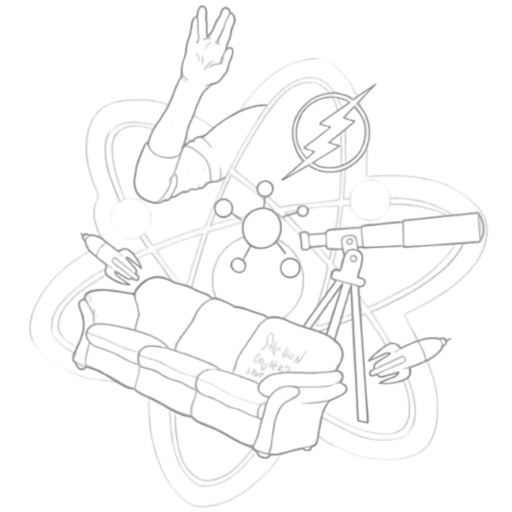

Big Bang Theory
Smart City Solution
Jogo
Quiz
Estatistícas
usuário
settings
Personalizar avatar
Fechar
logout
INICIAR QUIZ
Quantidade de acertos:
Quantidade de erros:
Pontuação Final:
***
***
Questão atual:
de
questões.
Escolha uma opção dentre as abaixo:
Submeter resposta
Avançar para próxima questão
Tentar novamente
INICIAR QUIZ MATEMÁTICA
Quantidade de acertos:
Quantidade de erros:
Pontuação Final:
***
***
Questão atual:
de
questões.
Escolha uma opção dentre as abaixo:
Submeter resposta
Avançar para próxima questão
Tentar novamente